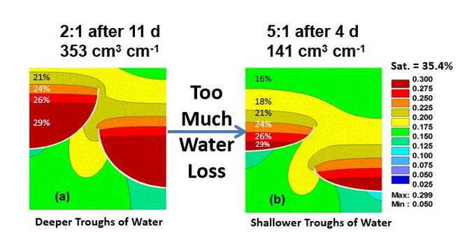
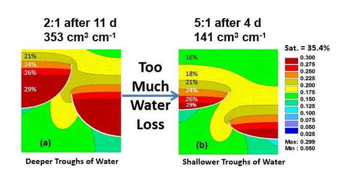

HYDRUS–2D Modeling of SWRT Membrane Configurations Predicted Greater Water Retention for Longer Periods of Time
HYDRUS modeling assisted with the development of most ideal shape of SWRT Membrane troughs (a). White lines represent SWRT membranes.

HYDRUS modeling assisted with the development of most ideal shape of SWRT Membrane troughs (a). White lines represent SWRT membranes.
